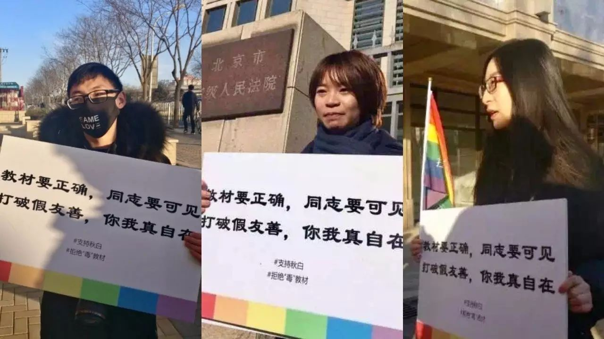

秋白状告教育部 | 带你回到二审开庭现场

1月10日下午，教育部涉性倾向歧视案在北京市高级人民法院进行了双方法庭对话。原告大学生秋白及其律师在法庭上就教科书歧视同性恋的描述、教育部拒绝回复行政举报的行为，在法庭上进行辩论，教育部政策法规司和高等教育司工作人员出庭应诉。这是大学生秋白第三次起诉教育部的第二次审理。法院没有当庭宣判。

教育部不否认教材伤害同性恋群体
但对秋白的影响“要好多个转折”
在今天的庭审中，教育部政法司和高教司的工作人员称，秋白并不是教科书的直接受害者，教科书说同性恋是病，说的是整个同性恋群体，其带来的伤害，是“经过好几个转折，才到了秋白身上”，原告秋白既不是行政行为特定利害关系人，也不符合直接伤害的原则。
“我在庭上立即回应他们，我所用的教材明确写着同性恋是性变态，老师也把这个观点写在PPT中进行教学，错误的教材是造成伤害的根源，既然教育部承认带来伤害，就应该解决这个伤害的原因！”对于教育部此观点，秋白表示很无语，“况且我行政复议的是教育部没给我举报进行回复，这个行政不作为如此明确，还想偷换概念。”


原告律师：
教育部不履行职责直接造成
秋白的人身权和财产权
北京义派律师事务所的王振宇律师和于丽颖律师在为原告代理律师明确提出两点代理意见：
1.秋白买了一本教材，一本带有歧视性内容的教材，财产产生了损失；秋白作为同性恋，在读到“同性恋是性变态”这样的内容时，人身权受到了侵害。她要求教育部对教材进行处理，保护的是她自己的人身权和财产权。教育部不履行职能，秋白就成了直接受到行政不作为的特定权利人。所以一审判决作出原告并非特定利害关系人的判决是错误的。
2.一审判决中认为”原告在群体一员享有的权利，是任何不特定群体成员均有的权利”，不能作为原告请求被告履行职责的权利依据。律师认为，这一逻辑非常荒谬，按这么说所有人都不能要求行政机关履行职责，只能是有特权的人才能要求了？
“既然教育部承认教科书对同性恋病化的描述对同性恋群体造成伤害，那就应该负起责任立刻改正。”一直关注同志法律权益的同志平等权益促进会负责人彭燕辉表示，“教育部一边不放下对教科书的监管职能，另一边对教科书的歧视内容坐视不管，新任教育部长上任后发表诸多誓言不能成为空文。”


调查报告指出
五成教科书歧视同性恋
据同城青少年中心在2014年发布的教科书对同性恋描述调查报告中，目前中国高校正在使用的87本心理学、大学生心理教康教育中，有超40%的教科书直接描述“同性恋是病”、“同性恋是性变态”，有约50%的教科书在介绍如果对同性恋进行“扭转治疗”。而“大学生心理健康教育”作为教育部发文各高校必修公共课程，其教科书普遍存在此些错误描述，且特别强调“爱情存在于男女之间，不包含同性恋”。
中山大学学生秋白2015年发现期所使用教材也存在歧视同性恋的描述，在多次与出版社与编者沟通无果后，通过向教育部申请信息公开、举报等方式要求教育部覆行其既定职能，更正错误教材以免继续加重对同性恋群体的歧视。2015年至2016年间三次起诉教育部未果。
2016年6月秋白向教育部提起行政复议，要求教育部对于她举报错误教科书没有回复的行政不作为进行复议，但教育部对于此行政复议作出不予受理的回复。遂秋白向北京第一中级人民法院提起教育部不受理其行政复议的诉讼。同年10月，北京一中院认为秋白作为个体不符合要求教育部履行教科书监管职责的举报诉求，判决秋白败诉。随后秋白诉至北京市高级人民法院。


同志社群赶赴法院
表达教科书去病诉求
十多名闻讯前来法院支持秋白的同志社群，虽然不能进入庭审现场，纷纷在法院外拍下拒绝恐同教材的照片以示支持。
一女同性恋小吴说，她已经跟家里人出柜了，但父母还是会认为同性恋是有病的，她觉得教科书的更正真的非常重要，“我不希望我的父母继续被这些错误的“知识”误导了，这这错误的知识也是对她父母的伤害啊！”
另一男同志也分享了他读书时因为性别气质被同学欺凌的故事，同学对他进行辱骂，甚至被强迫推进女厕。校园性别教育的缺失，加重校园霸凌的发生，对学生造成严重身心伤害。
当天同志社群自媒体同志之声微博直播庭审过程，阅读量达25.7万，拉拉公园和同性恋亲友会北京的志愿者通过视频现场直播带动2千多人同时在线观看，他们陪伴着现场在庭外的志愿者，一直等到庭审结束。
在一个多小时的双方对话过程中，教育部未再有新的观点或证据呈现，法院宣布择日再判。临结束秋白追向教育部问，“如果教科书说异性恋是病，你们觉得应不应该改？”教育部回答：“不知道！别问我！”
(以上秋白、小吴均为化名)
* 点击“阅读原文”可以查看教科书有哪些错误*
正文图片来自微博：同志之声
更多现场图片及新闻信息，可联系
原告秋白：13602476548
同志平等权益促进会燕子：15902088077